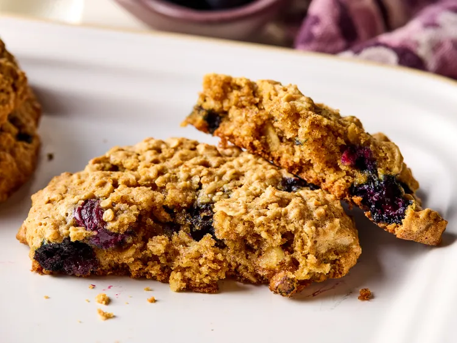

Home
Blueberry Breakfast Cookies

Image provided by Juliana Hale
Description
These blueberry breakfast cookies are the best breakfast cookies you'll ever have. They can be made with peanut butter or almond butter.
Ingredients
- 2 ¾ cups rolled oats, divided
- ¼ cup butter, softened
- ¾ cup natural creamy peanut butter or almond butter
- ½ cup pure maple syrup
- 1 large egg
- 2 teaspoons vanilla extract
- 1 teaspoon baking soda
- ½ teaspoon salt
- ½ teaspoon ground cinnamon
- ¾ cup fresh or frozen blueberries
- ⅓ cup toasted choped walnuts
Steps
- Gather all ingredients. Preheat the oven to 350 degrees F (175 degrees C). Line 2 baking sheets with parchment paper.
- Place 1 3/4 cups of the oats in a blender or food processor. Blend or process to a fine powder.
- Beat butter with an electric mixer in a bowl for 30 seconds. Beat in peanut butter and maple syrup until smooth. Beat in egg and vanilla just until combined.
- Combine oat flour, baking soda, salt, and cinnamon in a small bowl. Add oat flour mixture to peanut butter mixture and beat in until combined.
- Fold in remaining 1 cup oats, blueberries, and walnuts.
- Drop generous 1/4 cup portions of the dough onto the prepared baking sheets, about 6 cookies per sheet, and lightly flatten. Bake until browned, about 18 minutes.
- Let cool on baking sheets for 5 minutes. Transfer to wire racks to cool completely.